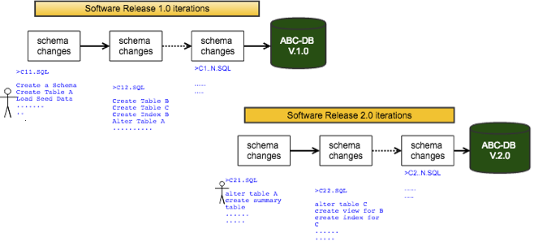

Introduction
Welcome to the Mintleaf! Mintleaf is a light weight framework tool helps you to advance your database developement on continuous integration / continuous delivery model as easy as possible.
Features
- Database Migration (either from command line or programatic approach)
- Ability to write automated tests and run them on migrated database schemas, objects, data integrity checks during CI/CD
- Seamless Test life cycle management such as setup, teardown mock data, schema and any database objects using changesets
- Transfer/Copy data between datbases
- Nothing more but to use Plain old SQL that you know of
Before we deep dive into the Mintleaf, lets look at what migration means and how it works.
Migration at a glance
Database migraton refers to the management of incremental, reversible changes to relational database schemas. A schema migration is performed on a database whenever it is necessary to update or revert that database’s schema to some newer or older version. Look at the below diagram which shows you the schema changes over a period of time during a Agile Software Developement Life Cycle. Every schema changes during a developement sprint will be applied to QA Databases and Prod Database at the end of sprint release.

When developing software applications backed by a database, developers typically develop the application source code in tandem with an evolving database schema. The code typically has rigid expectations of what columns, tables and constraints are present in the database schema whenever it needs to interact with one, so only the version of database schema against which the code was developed is considered fully compatible with that version of source code.
Version Control Systems v.s Database Migration Versions?
Teams of software developers usually use version control systems to manage and collaborate on changes made to versions of source code. Different developers can develop on divergent, relatively older or newer branches of the same source code to make changes and additions during development. So version control system by itself does not maintain database versions but data migration tools does it for you. So using Mintleaf you can maintain your database versions either upgrade to a newer version or degrade it a older version.
Why MintLeaf?
Schema migration to a production database is always a risky task. Production databases are usually huge, old, and full of surprise things like the following
- Assumptions on certian data conditions
- Implied dependencies which no body knows
- Unclean / stale data which are hard to resolve
- Direct schema patches for bug fixes
- Direct performance fixes and so on….
So for these reasons, a solid migration process needs high level of discipline through build, test and deploy strategy is a way to go as like shown in below diagram where Mintleaf serves as a tool and as a framework to help an organisation move forward to next level of Agile Database Developement.
So again, welcome to the Mintleaf! Mintleaf is a light weight framework tool helps you to advance your database developement on continuous integration / continuous delivery model as easy as possible.
Understanding Mintleaf
Let’s look at the core concepts behind Mintleaf design so that you will be able to understand and use it accordingly before you move onto technical section. Here is the simple steps to get you started quick.
Changesets
Changesets are basically contains one ore more changes that are to be applied during a database migration. Mintleaf changesets are stored in plain old sql files but changeset information is described using sql comment lines as shown below
-- <ChangeSet id="{a-change-set-id}" delimiter=";" userdata="" />
where,
| Parameter | Description |
|---|---|
| id | The ID of the changeset and it should be unique |
| delimiter | Sql DDL/DML statement delimiter |
| userdata | user defined columns that one can store additional meta data of the changeset. |
For example, a file ‘abcdb-changeset.sql’ contains the following two changesets: create schema and create tables
-- <ChangeSet id="create schema" delimiter=";" userdata="" />
DROP SCHEMA IF EXISTS ABCDB;
CREATE SCHEMA IF NOT EXISTS ABCDB;
-- <ChangeSet id="create tables" delimiter=";" userdata="" />
CREATE TABLE IF NOT EXISTS ABCDB.USERS
(
USERID INT NOT NULL,
USERNAME VARCHAR2(50),
RATE NUMBER(12, 2),
CREATE_TIME DATE DEFAULT sysdate,
CONSTRAINT PK_USERID PRIMARY KEY (USERID)
);
Version profile
Version profile is a configuration file which contains list of changesets to be applied for a particular version of a database migration. Typically you will have all versions from the beginning to the latest. So the Mintleaf looks for a default version profile at the folder where it is being execution location.
mintleaf.yml
databases:
- database:
id : abcdb
type : h2|oracle|sqlserver|postgres|mysql|sybase
url : jdbc:h2:file:./target/ABCDB;mv_store=false;
username :
password :
versions:
- version:
id : abcdb-v1
ver : 1.0
database : abcdb
changesets:
- create schema
- create tables
location:
- path/*.sql